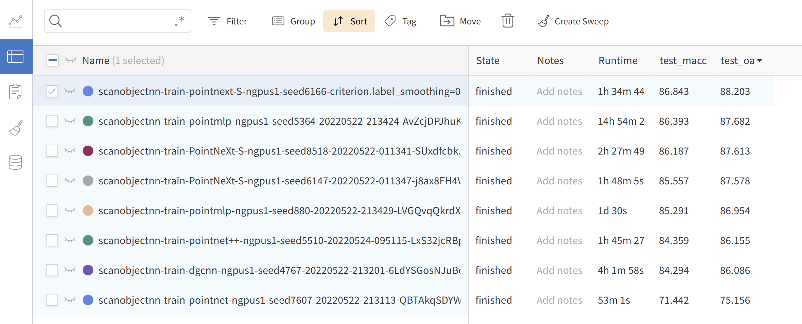

Getting Started
Weclome
Welcome to OpenPoints library. OpenPoints is a machine learning codebase for point-based methods for point cloud understanding. The biggest difference between OpenPoints and other libraries is that we focus more on reproducibility and fair benchmarking.
-
Extensibility: supports many representative networks for point cloud understanding, such as PointNet, DGCNN, DeepGCN, PointNet++, **ASSANet*, PointMLP, PointNeXt, and Pix4Point. More networks can be built easily based on our framework since OpenPoints support a wide range of basic operations including graph convolutions, linear convolutions, local aggregation modules, self-attention, farthest point sampling, ball query, e.t.c.
-
Reproducibility: all implemented models are trained on various tasks at least three times. Mean±std is provided in the PointNeXt paper. Pretrained models and logs are available.
-
Fair Benchmarking: in PointNeXt, we find a large part of performance gain is due to the training strategies. In OpenPoints, all models are trained with the improved training strategies and all achieve much higher accuracy than the original reported value.
-
Ease of Use: Build model, optimizer, scheduler, loss function, and data loader easily from cfg. Train and validate different models on various tasks by simply changing the
cfg\*\*.yamlfile.Here is an example ofmodel = build_model_from_cfg(cfg.model) criterion = build_criterion_from_cfg(cfg.criterion_args)pointnet.yaml(model configuration for PointNet model):model: NAME: BaseCls encoder_args: NAME: PointNetEncoder in_channels: 4 cls_args: NAME: ClsHead num_classes: 15 in_channels: 1024 mlps: [512,256] norm_args: norm: 'bn1d' -
Online logging: Support wandb for checking your results anytime anywhere.

Install
Pip packages
For Python import and checkpoint helper workflows:
pip install pointnext_official
pointnext_official depends on openpoints, provides PointNeXt metadata, and installs the pointnext-download checkpoint helper. These packages are importable without compiling CUDA extensions.
Source install for training/evaluation
git clone --recurse-submodules https://github.com/guochengqian/PointNeXt.git
cd PointNeXt
git submodule update --init --recursive
source install.sh
If SSH is configured, git clone --recurse-submodules git@github.com:guochengqian/PointNeXt.git is equivalent.
Note:
1) The original install.sh assumes CUDA 11.3-era PyTorch/CUDA settings. If another CUDA version is used, modify install.sh accordingly; check your CUDA version with nvcc --version before using the bash file.
2) If the bash file does not work on your machine, read install.sh step by step and run the matching PyTorch/CUDA/operator build commands manually.
3) PointNeXt benchmark training/evaluation uses custom CUDA/C++ ops from the openpoints submodule. CPU-only and PyPI-only installs are fine for import/package smoke tests, but full benchmark reproduction requires a CUDA GPU and source-built ops.
4) For all experiments, we use wandb for online logging. Run wandb --login only the first time in a new machine. Set wandb.use_wandb=False to disable wandb. Read the official wandb documentation if needed.
General Usage
All experiments follow the simple rule to train and test (run in the root directory):
CUDA_VISIBLE_DEVICES=$GPUs python examples/$task_folder/main.py --cfg $cfg $kwargs
- $GPUs is the list of GPUs to use, for most experiments (ScanObjectNN, ModelNet40, S3DIS), we only use 1 A100 (GPUs=0)
- $task_folder is the folder name of the experiment. For example, for s3dis segmentation, $task_folder=s3dis
- $cfg is the path to cfg, for example, s3dis segmentation, $cfg=cfgs/s3dis/pointnext-s.yaml
- $kwargs is used to overwrite the default configs. E.g. overwrite the batch size, just appending
batch_size=32or--batch_size 32. As another example, testing in S3DIS area 5, $kwargs should bemode=test --pretrained_path $pretrained_path.
Model Profiling (FLOPs, Throughputs, and Parameters)
CUDA_VISIBLE_DEVICES=0 python examples/profile.py --cfg $cfg batch_size=$bs num_points=$pts timing=True flops=True
For example, profile PointNeXt-S classification model as mentioned in paper:
- $cfg = cfgs/scanobjectnn/pointnext-s.yaml
- $bs = 128
- $pts = 1024